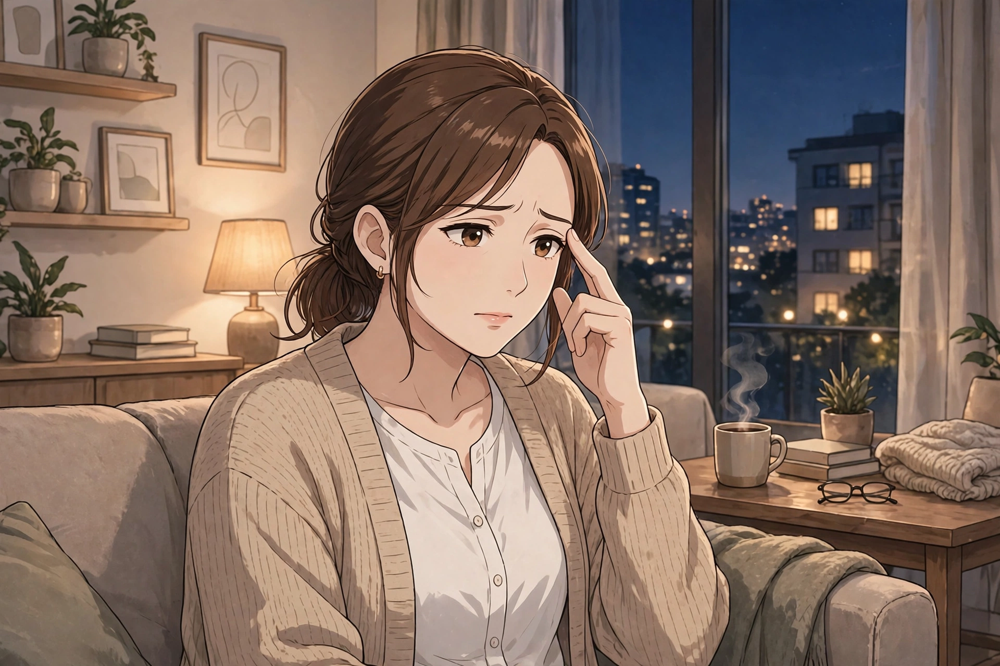

難波で頭痛に悩む方へ

夕方になると頭が重く、こめかみや後頭部がじんわり締めつけられるように感じる。肩や首の張りが強い日に限って、頭まで重くなる——頭の重さは、首・肩まわりの張りと重なって現れることが多いお悩みです。このページでは、首や肩の張りと関わる頭の重さの仕組みと、頭がすっと軽く感じられる状態を目指す当サロンでのケア、ご自宅でできるセルフケアをご案内します。なお、頭痛には医療機関での確認が必要なものもあります。受診の目安もあわせてご覧ください。
こんなお悩みありませんか
- 夕方になると頭が重く、締めつけられるように感じる
- 肩や首が張っている日は、決まって頭も重い
- 後頭部から首の付け根にかけて重だるい
- 画面を見続けた日は、こめかみが重く感じる
- 天気が崩れる前や、疲れがたまった日に頭が重くなる
- 頭が重いと、集中力が続かない
- 首や肩を温めると少し楽になる気がする
簡単セルフチェック（首・肩の張りチェック）
- 両肩に手のひらを当て、固さや盛り上がりがないかを確認します。
- 首をゆっくり左右に回し、回しにくさや詰まる感じがないかを見ます。
- 頭が重く感じる日に首・肩の張りも強い場合は、首まわりの張りと頭の重さが重なっている目安と言われています。
※これは診断ではありません。ご自身の状態の傾向を知る目安としてお使いください。
頭痛の原因と仕組み
首・肩の張りと頭の重さ
頭の重さや締めつけ感は、首や肩の筋肉の張りと重なって現れることが多いとされています。首の付け根から頭へ向かう筋肉や、頭を支える筋肉が固まると、頭まわりの巡りにも影響しやすいと言われています（図1）。デスクワークで同じ姿勢が続く日ほど、夕方に頭の重さを感じやすくなります。

姿勢と頭の位置
頭が前に出た姿勢では、首の後ろの筋肉が頭を支え続けることになり、付け根の張りが強くなりがちです（図2）。首の張りが続くと、肩から頭へかけての巡りが滞りやすく、頭の重さとして感じられることがあります。頭の位置と姿勢の土台を見直すことが、ケアの方向性になります。

疲れ・天候・ホルモンの影響
頭の重さは、睡眠不足や疲れの蓄積、気圧の変化、月経周期に伴う体の変化など、さまざまな条件で現れやすくなると言われています。東洋医学では、頭は「清陽の集まる場所」とされ、巡りの滞りや疲れの影響を受けやすいと考えます。条件が重なる日ほど、無理をしない過ごし方も大切です。
セルフケアで足りる場合・サロンケアが向く場合
頭の重さが軽く、休んだり温めたりすると楽になることが多い場合は、まずご自宅でのセルフケアと休息を続けて様子を見る方法があります。一方で、首や肩の張りが強く自分ではゆるめにくい、頭の重さが夕方の習慣のようになっているという場合は、サロンでのケアが向いている目安になります。強い痛みや異変を伴う場合は、ケアの前に医療機関へご相談ください。
当サロンでのケア
当サロンの頭の重さへのケアは、「首・肩からゆるめて、頭がすっと軽く感じられる状態」を目指す組み立てです。まず首・肩の張りと姿勢を一緒に確認し、2つの手技を組み合わせます。
美容整体：頭の位置と背骨・肩のラインを整え、首に負担が集まりにくい姿勢の土台をつくることを目的に進めます。
オイルマッサージ：首の付け根から肩、肩甲骨まわりを、経絡の流れに沿ってオイルで深くゆるめ、頭まわりの巡りが流れやすい状態を目指します。頭まわりへの直接の強い刺激は避け、首・肩から整える進め方です。
ケアを通して目指すのは、こんな変化です。
- 首・肩の張りがやわらぎ、頭が軽く感じる状態へ
- 頭の位置が整い、首がすっと伸びて見える姿勢へ
- 夕方の頭の重さを感じにくい、巡りのよい状態へ
施術の仕上げには、その日の状態に合わせたセルフケアのポイントもお伝えします。強さは途中でも調整できますので、遠慮なくお声がけください。
施術の流れ
- 受付・カウンセリング：入室方法はご予約確定後にご案内します。気になる部位やお悩み、ご希望の強さなどをうかがいます。
- シャワー・お着替え：ご希望の方は、施術前にシャワーで汗を流して施術着にお着替えいただけます。
- 美容整体：骨盤・背骨・肩甲骨のバランスを整え、オイルが深く働きやすい土台をつくります。
- オイルマッサージ：経絡の流れに沿って全身を深くほぐします。タオルワークを丁寧に行い、露出は最小限にしています。
- シャワー・お仕上げ：施術後はシャワーでオイルを洗い流し、ゆっくりお支度いただけます。
- アフターカウンセリング：お身体の状態とセルフケアのポイントをお伝えします。無理な勧誘はいたしません。
料金・店舗情報
オイルマッサージ＋美容整体 90分 10,000円（税込）｜コースは1つだけです。有料の追加オプションの販売はありません。お支払いは現金のみです。
住所：大阪市浪速区幸町1-2-9 RE-005 502号（JR難波駅 徒歩5分）｜営業時間：月〜土 17:00〜22:00／日曜 12:00〜22:00｜女性専用・完全予約制・シャワー完備の完全個室｜当サロンでは鍼灸施術は行いません。
ご自宅でできるセルフケア
- 首の付け根を温める：蒸しタオルを首の後ろに当て、巡りを助けます。頭が重く感じ始めたタイミングで行うのが目安です。
- 肩の上げ下げ体操：両肩を上げて5秒キープし、ストンと下ろします。5回を1セットとして合間に取り入れます。
- 目を休める：画面作業では1時間に一度、遠くを見て目と首を休める時間をつくります。
- 睡眠のリズムを整える：就寝前のスマホ時間を短くし、眠りの質を整えることも頭の重さ対策になります。
受診の目安
今までにない強い頭痛、突然始まった激しい頭痛、手足のしびれやろれつの回りにくさを伴う場合、発熱や嘔吐を伴う場合は、施術ではなく速やかに医療機関を受診してください。頭痛の頻度や程度が変わってきた場合も、まずは医療機関でご相談ください。
よくある質問
頭痛がある日でも施術を受けられますか？
軽い頭の重さの場合は、状態をうかがいながら無理のない範囲で進めます。強い痛みや、いつもと違う症状がある場合は、施術の前に医療機関への受診をおすすめしています。
頭を直接マッサージしてもらえますか？
当サロンでは、頭まわりへの強い刺激は避け、首・肩・肩甲骨まわりからゆるめる進め方を基本としています。ご希望がある場合はカウンセリングでご相談ください。
料金と支払い方法を教えてください。
コースは1つだけです。オイルマッサージ＋美容整体の90分で10,000円（税込）、有料の追加オプションの販売はありません。お支払いは現金のみです。
男性のセラピストだと聞きました。少し緊張します。
施術は男性セラピストが担当します。その分、丁寧なタオルワークと完全個室、健全な施術の徹底をお約束しています。国家資格と30年の経験がありますので、安心してお任せください。
施術は痛いですか？強さは調整できますか？
強さは、ご希望をうかがいながら調整します。固まった部位を無理に押しほぐすのではなく、お身体の状態に合わせた圧で進めます。感じ方には個人差がありますので、施術中も遠慮なくお声がけください。
施術者について
平賀 伸人（ひらが のぶひと／男性セラピスト）｜施術歴30年。鍼灸師（国家資格）・登録販売者・アロマセラピスト・パーソナルトレーナーの資格を持ち、オイルマッサージと美容整体を、その日の状態とご希望に合わせて組み合わせて施術します。このページの内容は、施術者の知識と経験をもとに作成しています。
関連するお悩み
ご予約・お問い合わせ
ご予約はLINE公式アカウントで受け付けています。ご希望の日時をお送りください。変更・キャンセルはLINEでご連絡ください。キャンセル料はいただきません。
さらに学びたい方へ：現場で使われる専門書（PR）
このページのテーマに合わせて選んだ本と、当店の施術でも参考にしている専門書です。


※本ブロックのリンクはAmazonアソシエイト・プログラムおよび楽天アフィリエイトによる広告リンクです。使用感の保証をするものではありません。